the front of the trunk from the neck to the abdomen
4.35
tail
/teil/
n. 尾部, 后部, 辫子, 随员, 特务, 燕尾服, 踪迹, 限定继承(权)
the posterior part of the body of a vertebrate especially when elongated and extending beyond the trunk or main part of the body
4.34
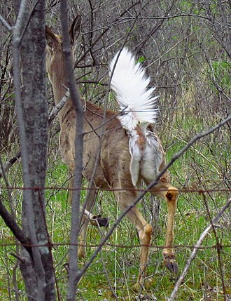
knee
/ni:/
n. 膝, 膝盖
hinge joint in the human leg connecting the tibia and fibula with the femur and protected in front by the patella
4.33
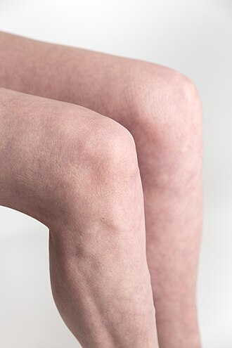
tissue
/'tiʃu:/
n. 薄的织物, 薄纱, 棉纸, 组织, 一套
part of an organism consisting of an aggregate of cells having a similar structure and function
4.32
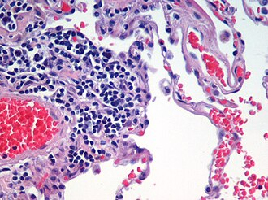
throat
/θrәut/
n. 咽喉, 喉咙, 嗓音
the passage to the stomach and lungs; in the front part of the neck below the chin and above the collarbone
4.3
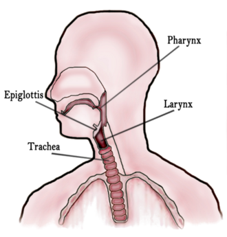
vessel
/'vesl/
n. 船, 容器, 脉管
a tube in which a body fluid circulates
4.27
pussy
/'pusi/
n.〈非正式〉猫咪；〈侮辱〉女阴；〈侮辱〉娘娘腔
obscene terms for female genitals
4.24
cock
/kɒk/
n. 公鸡, 雄禽, 龙头, 头目, 锥形小干草堆
obscene terms for penis
4.23
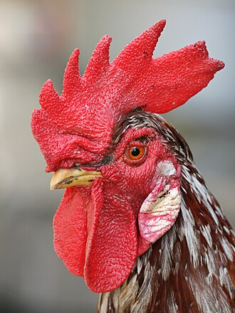
palm
/pɑ:m/
n. 手掌, 棕榈, 胜利
the inner surface of the hand from the wrist to the base of the fingers
4.23
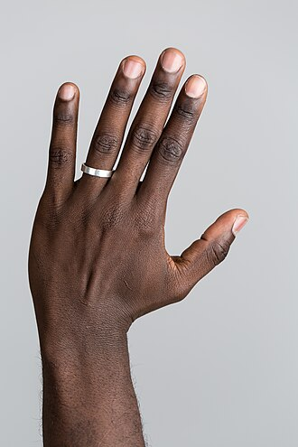
nail
/neil/
n. 钉子, 指甲
horny plate covering and protecting part of the dorsal surface of the digits
4.21
flesh
/'fleʃ/
n. 肉, 肉体, 肉欲, 人性, 亲属, 人类, 众生, 人体
the soft tissue of the body of a vertebrate: mainly muscle tissue and fat
4.2
nerve
/nә:v/
n. 精神, 勇气, 叶脉, 神经
any bundle of nerve fibers running to various organs and tissues of the body
4.19
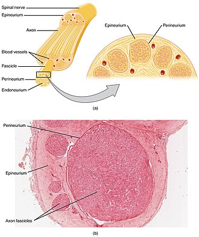
lap
/læp/
n. 膝盖, 舔, 一圈, 下摆, 衣兜, 山坳
the upper side of the thighs of a seated person
4.18
liver
/'livә/
n. 肝脏, 生活者, 居民
large and complicated reddish-brown glandular organ located in the upper right portion of the abdominal cavity; secretes bile and functions in metabolism of protein and carbohydrate and fat; synthesizes substances involved in the clotting of the blood; synthesizes vitamin A; detoxifies poisonous substances and breaks down worn-out erythrocytes
4.18
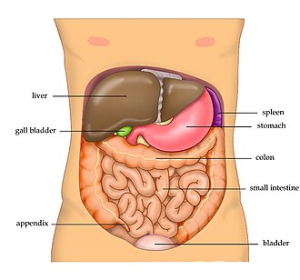
costa
/'kɒstә/
n. 肋骨, 肋脉, 叶的中脉
a riblike part of a plant or animal (such as a middle rib of a leaf or a thickened vein of an insect wing)
4.15
organ
/'ɒ:gәn/
n. 风琴, 器官, 元件, 机构, 机关
a fully differentiated structural and functional unit in an animal that is specialized for some particular function
4.14
lip
/lip/
n. 唇, 口缘, 唇状构造
either of two fleshy folds of tissue that surround the mouth and play a role in speaking
4.13
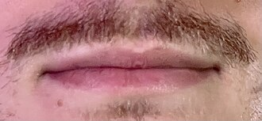
valve
/vælv/
n. 活瓣, 阀, 活门
a structure in a hollow organ (like the heart) with a flap to insure one-way flow of fluid through it
4.13
belly
/'beli/
n. 腹部, 食欲
the region of the body of a vertebrate between the thorax and the pelvis
4.1
facial
/'feiʃәl/
n. 美颜, 脸部按摩
cranial nerve that supplies facial muscles
4.1
lung
/lʌŋ/
n. 肺, 肺脏, 空地
either of two saclike respiratory organs in the chest of vertebrates; serves to remove carbon dioxide and provide oxygen to the blood
4.1
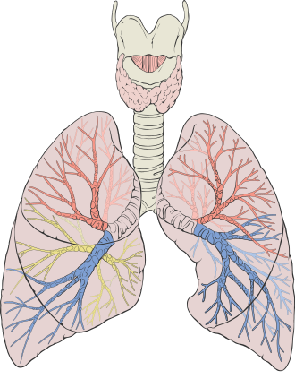
os
/ɒs/
n. 骨, 孔, 穴裂口
a mouth or mouthlike opening
4.1
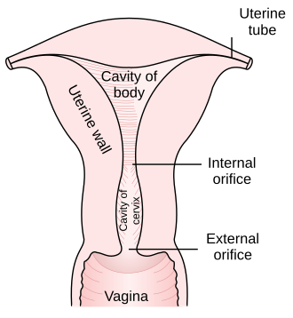
skull
/skʌl/
n. 头盖骨, 头脑, 好学生
the bony skeleton of the head of vertebrates
4.09
tooth
/tu:θ/
n. 牙齿, 齿状物, 爱好
hard bonelike structures in the jaws of vertebrates; used for biting and chewing or for attack and defense
4.08
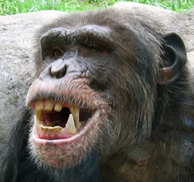
toe
/tәu/
n. 足趾, 趾部, 脚趾
one of the digits of the foot
4.07
penis
/'pi:nis/
n. 阳物, 阴茎
the male organ of copulation (`member' is a euphemism)
4.05
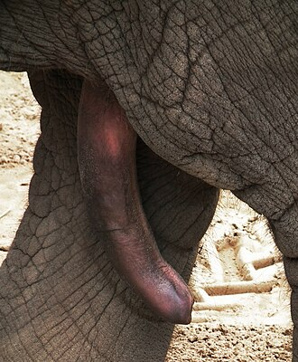
kidney
/'kidni/
n. 肾, 个性
either of two bean-shaped excretory organs that filter wastes (especially urea) from the blood and excrete them and water in urine
4.03
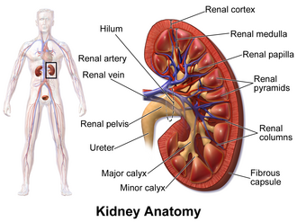
thumb
/θʌm/
n. 拇指
the thick short innermost digit of the forelimb
4.01
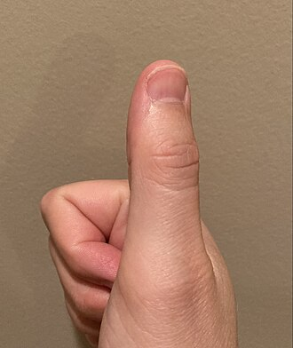
wrist
/rist/
n. 手腕, 腕关节
a joint between the distal end of the radius and the proximal row of carpal bones
4.01
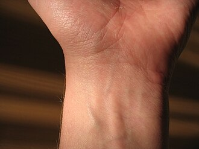
chin
/tʃin/
n. 下巴, 颏
the protruding part of the lower jaw
4.0
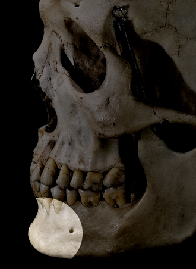
jaw
/dʒɒ:/
n. 颚, 颌
the part of the skull of a vertebrate that frames the mouth and holds the teeth
3.98
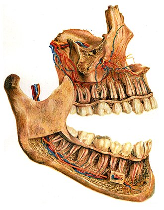
ankle
/'æŋkl/
n. 踝
a gliding joint between the distal ends of the tibia and fibula and the proximal end of the talus
3.97
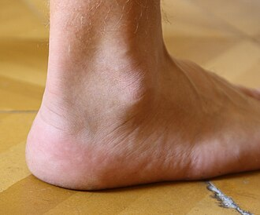
cheek
/tʃi:k/
n. 颊, 厚颜, 脸蛋
either side of the face below the eyes
3.96
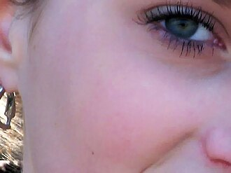
waist
/weist/
n. 腰部, 腰
the narrowing of the body between the ribs and hips
3.96
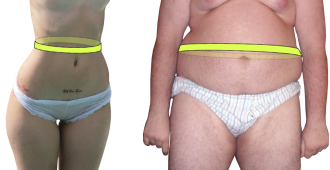
spine
/spain/
n. 背骨, 脊柱, 尖刺
the series of vertebrae forming the axis of the skeleton and protecting the spinal cord
3.93
fist
/fist/
n. 拳头, 手
a hand with the fingers clenched in the palm (as for hitting)
3.89
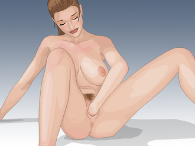
forehead
/'fɒ:rid/
n. 额, 前额, 前部
the part of the face above the eyes
3.87
pulmonary artery复合词
/ˈpʊlməˌneri: ˈɑ:təri/
n. 肺动脉
one of two arteries (branches of the pulmonary trunk) that carry venous blood from the heart to the lungs
3.87
elbow
/'elbәu/
n. 手肘, 弯头, 扶手
hinge joint between the forearm and upper arm and the corresponding joint in the forelimb of a quadruped
3.84
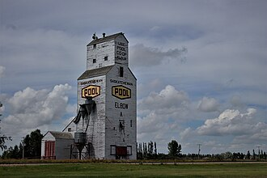
vagina
/vә'dʒainә/
n. 阴道, 鞘, 叶鞘
the lower part of the female reproductive tract; a moist canal in female mammals extending from the labia minora to the uterus
3.82
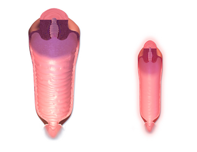
lid
/lid/
n. 盖子, 限制, 眼睑
either of two folds of skin that can be moved to cover or open the eye
3.81
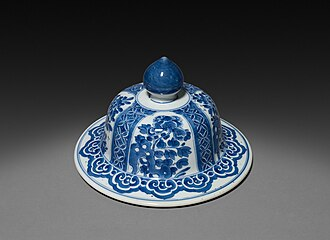
vocal cord复合词
[医] 声带, 声襞
either of two pairs of folds of mucous membrane projecting into the larynx
3.8
elbow joint复合词
[医] 肘关节
hinge joint between the forearm and upper arm and the corresponding joint in the forelimb of a quadruped
3.79
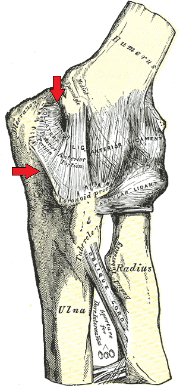
receptor
/ri'septә/
n. 受体, 感觉器官
a cellular structure that is postulated to exist in order to mediate between a chemical agent that acts on nervous tissue and the physiological response
3.79
reproductive system复合词
[医] 生殖系统
organs and tissues involved in the production and maturation of gametes and in their union and subsequent development as offspring
3.79
respiratory center复合词
/ˈrespərəˌtɔ:ri: ˈsentə/
呼吸中枢
the center in the medulla oblongata and pons that integrates sensory information about the level of oxygen and carbon dioxide in the blood and determines the signals to be sent to the respiratory muscles
3.79
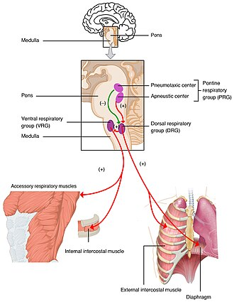
cell membrane复合词
/sel ˈmemˌbreɪn/
细胞膜
a thin membrane (a double layer of lipids) enclosing the cytoplasm of a cell; proteins in the membrane control passage of ions (like sodium or potassium or calcium) in and out of the cell
3.78
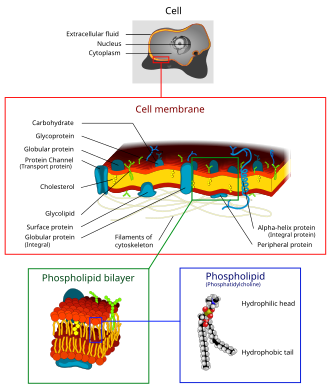
acoustic nerve复合词
[医] 听神经
a composite sensory nerve supplying the hair cells of the vestibular organ and the hair cells of the cochlea
3.77
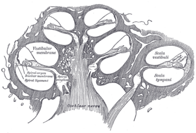
hawk nose复合词
/hɔ:k nəuz/
鹰钩鼻
a nose curved downward like the beak of a hawk
3.77
vein
/vein/
n. 血管, 静脉, 纹理, 气质, 情绪
a blood vessel that carries blood from the capillaries toward the heart
3.77
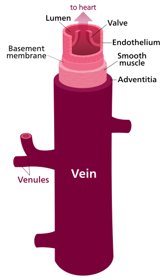
transplant兼类词
/træns'plɑ:nt/
n. 移居者, 移植
(surgery) tissue or organ transplanted from a donor to a recipient; in some cases the patient can be both donor and recipient
3.76
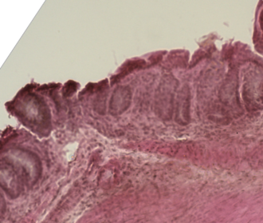
elbow bone复合词
un. 尺骨
the inner and longer of the two bones of the human forearm
3.75
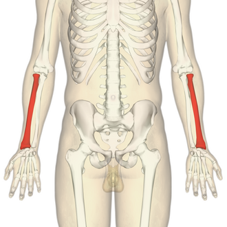
horny structure复合词
/ˈhɔ:ni: ˈstrʌktʃə/
角质结构物
any rigid body structure composed primarily of keratin
3.75
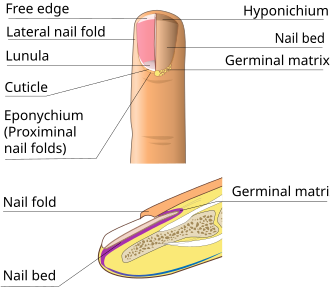
cardiac muscle复合词
[医] 心肌
the muscle tissue of the heart; adapted to continued rhythmic contraction
3.74
lateral line复合词
/ˈlætərəl lain/
侧线
sense organs of fish and amphibians; believed to detect pressure changes in the water
3.74
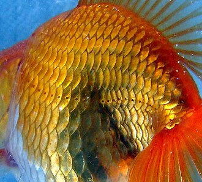
membrane bone复合词
[医] 膜[成]骨
any bone that develops within membranous tissue without previous cartilage formation; e.g. the clavicle and bones of the skull
3.73
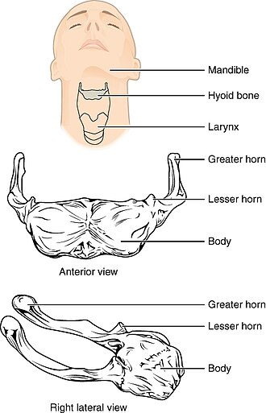
spinal column复合词
[医] 脊柱
the series of vertebrae forming the axis of the skeleton and protecting the spinal cord
3.73
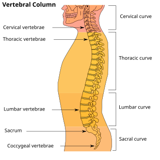
thigh
/θai/
n. 大腿, 股
the part of the leg between the hip and the knee
3.73
leaf node复合词
[计] 叶节点
(botany) the small swelling that is the part of a plant stem from which one or more leaves emerge
3.72
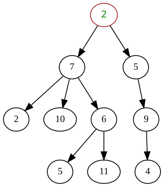
sticker
/'stikә/
n. 屠夫, 尖刀, 刺, 芒, 尖物, 携带尖刀者, 张贴物, 滞销品, (非正式)难题
a small sharp-pointed tip resembling a spike on a stem or leaf
3.71
limb
/lim/
n. 四肢, 枝干, 翼, 边缘
one of the jointed appendages of an animal used for locomotion or grasping: arm; leg; wing; flipper
3.7
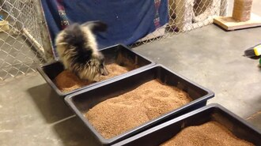
spinal canal复合词
/ˈspaɪnəl kəˈnæl/
脊柱管, 脊椎管, 髓管
the canal in successive vertebrae through which the spinal cord passes
3.7
fatty tissue复合词
[医] 脂肪组织
a kind of body tissue containing stored fat that serves as a source of energy; it also cushions and insulates vital organs
3.69
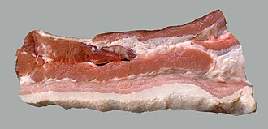
fiber bundle复合词
/ˈfaibə ˈbʌndl/
光学纤维束，纤维丛
a bundle of fibers (especially nerve fibers)
3.69
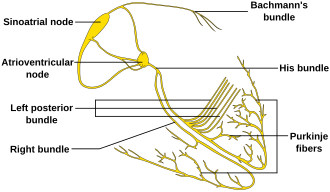
right hemisphere复合词
/rait ˈhemiˌsfiə/
[大脑]右半球
the cerebral hemisphere to the right of the corpus callosum that controls the left half of the body
3.69
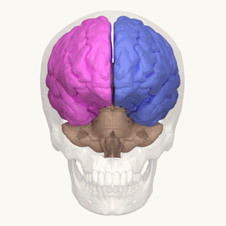
shin
/ʃin/
n. 胫骨
the front part of the human leg between the knee and the ankle
3.69
spinal nerve复合词
/ˈspaɪnəl nə:v/
脊神经
any of the 31 pairs of nerves emerging from each side of the spinal cord (each attached to the cord by two roots: ventral and dorsal)
3.69
left hemisphere复合词
/left ˈhemiˌsfiə/
左半球
the cerebral hemisphere to the left of the corpus callosum that controls the right half of the body
3.68
stretch receptor复合词
(肌肉的)牵张感受器
a receptor in a muscle that responds to stretching of the muscle tissue
3.68
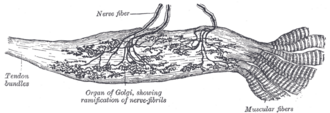
cardiovascular system复合词
[医] 心血管系统
the organs and tissues involved in circulating blood and lymph through the body
3.67
prostate兼类词
/'prɒsteit/
n. 前列腺
a firm partly muscular chestnut sized gland in males at the neck of the urethra; produces a viscid secretion that is the fluid part of semen
3.67
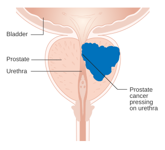
pulmonary vein复合词
/ˈpʊlməˌneri: vein/
n. 肺静脉
any of four veins that carry arterial blood from the lungs to the left atrium of the heart
3.67
air sac复合词
/eə(r) sæk/
气囊气孔
a tiny sac for holding air in the lungs; formed by the terminal dilation of tiny air passageways
3.66
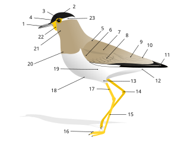
alpha-receptor复合词
/'ælfərɪs'eptə/
n. α肾上腺素能受体
receptors postulated to exist on nerve cell membranes of the sympathetic nervous system in order to explain the specificity of certain agents that affect only some sympathetic activities (such as vasoconstriction and relaxation of intestinal muscles and contraction of smooth muscles)
3.66
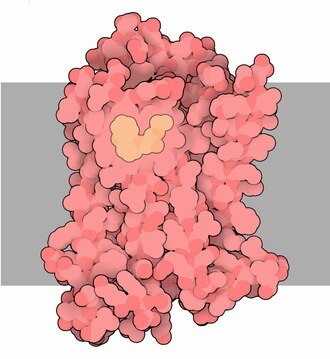
cardiac valve复合词
/ˈkɑ:di:ˌæk vælv/
贲门瓣
a valve to control one-way flow of blood
3.66
neural tube复合词
/ˈnjuərəl tju:b/
神经管
a tube of ectodermal tissue in the embryo from which the brain and spinal cord develop
3.66
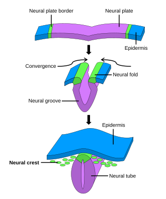
scar tissue复合词
[医] 瘢痕组织
the connective tissue that forms a scar; consists of fibroblasts in new scars and collagen fibers in old scars
3.66
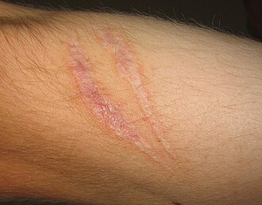
sensory hair复合词
/ˈsensəri: hɛə/
感觉毛
a long stiff hair growing from the snout or brow of most mammals as e.g. a cat
3.66
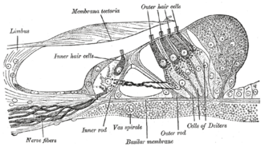
artery
/'ɑ:tәri/
n. 动脉, 干道, 要道
a blood vessel that carries blood from the heart to the body
3.65
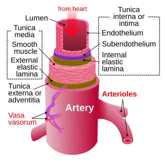
beta receptor复合词
/ˈbi:tə rɪˈseptə/
β受体
receptors postulated to exist on nerve cell membranes of the sympathetic nervous system in order to explain the specificity of certain agents that affect only some sympathetic activities (such as vasodilation and increased heart beat)
3.65
optic兼类词
/'ɒptik/
n. 镜片
the organ of sight
3.65
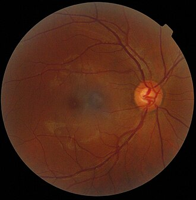
wandering nerve复合词
/ˈwɔndɵrɪŋ nə:v/
迷走神经
a mixed nerve that supplies the pharynx and larynx and lungs and heart and esophagus and stomach and most of the abdominal viscera
3.65
calf bone复合词
[医] 腓骨
the outer and thinner of the two bones of the human leg between the knee and ankle
3.64
optic cup复合词
[医] 视杯
(embryology) a two-walled cuplike depression that develops into the pigmented and sensory layers of the retina
3.64
reproductive organ复合词
/ˌri:prəˈdʌktɪv ˈɔ:ɡən/
生殖器
any organ involved in sexual reproduction
3.64
respiratory organ复合词
/ˈrespərəˌtɔ:ri: ˈɔ:ɡən/
呼吸器（官）
any organ involved in the process of respiration
3.64
nerve pathway复合词
[解剖] 神经通路
a bundle of myelinated nerve fibers following a path through the brain
3.63
womb
/wu:m/
n. 子宫, 发源地
a hollow muscular organ in the pelvic cavity of females; contains the developing fetus
3.63
bladder
/'blædә/
n. 膀胱, 囊
a distensible membranous sac (usually containing liquid or gas)
3.62
air bladder复合词
[医] 气囊, 气泡
an air-filled sac near the spinal column in many fishes that helps maintain buoyancy
3.61
gill bar复合词
/gɪl bɑ:/
鳃杆
one of the bony or cartilaginous arches on each side of the pharynx that support the gills of fishes and aquatic amphibians
3.61
spinal cord复合词
脊髓；[医] 脊髓
a major part of the central nervous system which conducts sensory and motor nerve impulses to and from the brain; a long tubelike structure extending from the base of the brain through the vertebral canal to the upper lumbar region
3.61
colon
/'kәulәn/
n. 冒号, 结肠
the part of the large intestine between the cecum and the rectum; it extracts moisture from food residues before they are excreted
3.6
facial vein复合词
/ˈfeɪʃəl vein/
面静脉
any of several veins draining the face
3.6
pudding face复合词
肥大的脸
a large fat human face
3.6
claw
/klɒ:/
n. 爪, 螯, 抓伤
sharp curved horny process on the toe of a bird or some mammals or reptiles
3.59
cortex
/'kɒ:teks/
n. 皮层
the layer of unmyelinated neurons (the grey matter) forming the cortex of the cerebrum
3.59
nerve tract复合词
[医] 神经束, 神经径
a bundle of myelinated nerve fibers following a path through the brain
3.59
nucleus
/'nju:kliәs/
n. 核心, 核子, 原子核, 起点
a part of the cell containing DNA and RNA and responsible for growth and reproduction
3.59
tear sac复合词
[医] 泪囊
either of the two dilated ends of the lacrimal ducts at the nasal ends of the eyes that fill with tears secreted by the lacrimal glands
3.59
duct
/dʌkt/
n. 管, 输送管
a bodily passage or tube lined with epithelial cells and conveying a secretion or other substance
3.58
external gill复合词
/eksˈtə:nl gɪl/
（两栖类）外鳃
occurs in some mollusks and in tadpoles and other immature amphibians
3.58
muscular tissue复合词
[医] 肌组织
animal tissue consisting predominantly of contractile cells
3.58
plasma membrane复合词
[化] 质膜
a thin membrane (a double layer of lipids) enclosing the cytoplasm of a cell; proteins in the membrane control passage of ions (like sodium or potassium or calcium) in and out of the cell
3.58
rotary joint复合词
[化] 转动接头
a freely moving joint in which movement is limited to rotation
3.58
true rib复合词
/tru: rib/
真肋
one of the first seven ribs in a human being which attach to the sternum
3.58
arse
/ɑ:s/
n. 屁股
the fleshy part of the human body that you sit on
3.57
association cortex复合词
/əˌsəuʃiˈeiʃən ˈkɔː(r)teks/
联络皮质
cortical areas that are neither motor or sensory but are thought to be involved in higher processing of information
3.57
lens capsule复合词
/lenz ˈkæpsju:l/
晶状体囊
a tenuous mesoblastic membrane surrounding the lens of the eye
3.57
neural arch复合词
[医] 神经弓(椎骨发生)
a structure arising dorsally from a vertebral centrum and enclosing the spinal cord
3.57
portal vein复合词
门静脉
a short vein that carries blood into the liver
3.57
temporal bone复合词
[医] 颞骨
a thick bone forming the side of the human cranium and encasing the inner ear
3.57
temporal muscle复合词
/ˈtempərəl ˈmʌsl/
[医]颞肌：同musculus temporalis
muscle extending from the temporal fossa to the coronoid process of the mandible; acts to raise the mandible and close the jaws
3.57
abdomen
/'æbdәmen/
n. 腹部
the region of the body of a vertebrate between the thorax and the pelvis
3.56
bone marrow复合词
/bəun ˈmærəʊ/
n. 骨髓
the fatty network of connective tissue that fills the cavities of bones
3.56
chest cavity复合词
/tʃest ˈkæviti/
胸腔
the cavity in the vertebrate body enclosed by the ribs between the diaphragm and the neck and containing the lungs and heart
3.56
optic radiation复合词
[医] 视辐射线
a nerve pathway from the lateral geniculate body to the visual cortex
3.56
oral cavity复合词
/ˈɔrəl ˈkæviti/
n. 口腔
the opening through which food is taken in and vocalizations emerge
3.56
rib cage复合词
/rib keidʒ/
n. 胸腔
the bony enclosing wall of the chest
3.56
sensory nerve复合词
[医] 感觉神经
a nerve that passes impulses from receptors toward or to the central nervous system
3.56
bowel
/'bauәl/
n. 肠, 内脏, 内部
the part of the alimentary canal between the stomach and the anus
3.55
brow
/brau/
n. 眉毛, 额
the part of the face above the eyes
3.55
eye socket复合词
/ai ˈsɔkit/
n. 眼窝, 眼眶
the bony cavity in the skull containing the eyeball
3.55
hind leg复合词
/haɪnd leɡ/
后腿
the back limb of a quadruped
3.55
optic nerve复合词
[电] 视神经
the cranial nerve that serves the retina
3.54
respiratory tract复合词
[医] 呼吸道
the passages through which air enters and leaves the body
3.54
visual cortex复合词
[医] 视皮质, 纹状区
the cortical area that receives information from the lateral geniculate body of the thalamus
3.54
ala
/'eilә/
n. 翼, 翅
a flat wing-shaped process or winglike part of an organism
3.53
cardinal vein复合词
/ˈkɑ:dinl vein/
主静脉
any of the major venous channels in primitive adult vertebrates and in embryos of higher vertebrates
3.53
marrow
/'mærәu/
n. 髓, 骨髓, 精华, 活力, 配偶
the fatty network of connective tissue that fills the cavities of bones
3.53
thyroid兼类词
/'θairɒid/
n. 甲状腺, 甲状软骨, 甲状腺剂
located near the base of the neck
3.53
abdominal muscle复合词
/æbˈdɔmənəl ˈmʌsl/
腹肌
the muscles of the abdomen
3.52
accessory nerve复合词
/ækˈsesəri nə:v/
副神经
arises from two sets of roots (cranial and spinal) that unite to form the nerve
3.52
elastic tissue复合词
[医] 弹性组织
connective tissue consisting chiefly of elastic fibers found in the dermis of the skin and in the walls of veins and arteries and in some tendons and ligaments
3.52
facial artery复合词
/ˈfeɪʃəl ˈɑ:təri/
面动脉
an artery that originates in the external carotid and gives off branches that supply the neck and face
3.52
red marrow复合词
[医] 红骨髓
bone marrow of children and some adult bones that is required for the formation of red blood cells
3.52
socket
/'sɒkit/
n. 窝, 穴, 插座, 眼窝
a bony hollow into which a structure fits
3.52
swim bladder复合词
/swim ˈblædə/
n. 浮囊, 鱼鳔
an air-filled sac near the spinal column in many fishes that helps maintain buoyancy
3.52
accompanying vein复合词
/ə'kʌmpəniiŋ vein/
伴行静脉
a vein accompanying another structure; a vein may accompany an artery in such a way that the arterial pulses aid venous return
3.51
tear duct复合词
n. 泪腺
any of several small ducts that carry tears from the lacrimal glands
3.51
vascular system复合词
[医] 血管系统
the vessels and tissue that carry or circulate fluids such as blood or lymph or sap through the body of an animal or plant
3.51
yellow marrow复合词
[医] 黄骨髓
bone marrow that is yellow with fat; found at the ends of long bones in adults
3.5
fore wing复合词
/fɔ: wiŋ/
前翅
either of the anterior pair of wings on an insect that has four wings
3.49
lens nucleus复合词
/lenz ˈnju:kliəs/
晶状体核
the central structure of the lens that is surrounded by the cortex
3.49
fibre bundle复合词
/ˈfaibə ˈbʌndl/
光纤束，纤维束
a bundle of fibers (especially nerve fibers)
3.48
gill arch复合词
[医] 鳃弓
one of the bony or cartilaginous arches on each side of the pharynx that support the gills of fishes and aquatic amphibians
3.48
paw
/pɒ:/
n. 爪
a clawed foot of an animal especially a quadruped
3.48
scalp兼类词
/skælp/
n. 头皮, 战利品
the skin that covers the top of the head
3.48
tit
/tit/
n. 山雀, 打击, 轻佻女人, 奶头, 按钮
either of two soft fleshy milk-secreting glandular organs on the chest of a woman
3.48
fanny
/'fæni/
n. Frances 的爱称；[口]屁股；女子救护队队员
the fleshy part of the human body that you sit on
3.47
graft
/grɑ:ft/
n. 嫁接, 贪污
(surgery) tissue or organ transplanted from a donor to a recipient; in some cases the patient can be both donor and recipient
3.47
hip socket复合词
/hip ˈsɔkit/
胫腕，膝盖骨
the socket part of the ball-and-socket joint between the head of the femur and the innominate bone
3.47
pivot joint复合词
/ˈpɪvət dʒɔint/
环枢关节，车轴关节
a freely moving joint in which movement is limited to rotation
3.47
sweat duct复合词
/swet dʌkt/
汗腺管
a small duct that conveys sweat from a sudoriferous gland to the surface of the skin
3.47
anterior root复合词
[医] 前根, 脊神经前根
one of two the two roots of a spinal nerve that passes ventrally from the spinal cord and that consists of motor fibers
3.46
digestive system复合词
[医] 消化系统
the system that makes food absorbable into the body
3.46
lantern jaw复合词
突出的下巴
a long thin lower jaw
3.46
genital system复合词
/ˈdʒenitl ˈsistəm/
生殖系统
organs and tissues involved in the production and maturation of gametes and in their union and subsequent development as offspring
3.45
nasal bone复合词
/ˈneɪzəl bəun/
鼻骨
an elongated rectangular bone that forms the bridge of the nose
3.45
nipple
/'nipl/
n. 乳头, 奶头, 奶嘴
the small projection of a mammary gland
3.45
skin graft复合词
[医] 皮移植片
a piece of skin taken from a donor area and surgically grafted at the site of an injury or burn
3.45
frontal bone复合词
[医] 额骨
the large cranial bone forming the front part of the cranium: includes the upper part of the orbits
3.44
left hand复合词
左手
the hand that is on the left side of the body
3.44
posterior兼类词
/pɒ'stiәriә/
n. 后部, 臀部
the fleshy part of the human body that you sit on
3.43
sensory receptor复合词
/ˈsensəri: rɪˈseptə/
[医]感觉感受器
an organ having nerve endings (in the skin or viscera or eye or ear or nose or mouth) that respond to stimulation
3.43
tummy
/'tʌmi/
n. 胃, 肚子
slang for a paunch
3.43
anterior horn复合词
/ænˈtɪəri:ə hɔ:n/
前柱
one of two the two roots of a spinal nerve that passes ventrally from the spinal cord and that consists of motor fibers
a semilunar valve between the right ventricle and the pulmonary artery; prevents blood from flowing from the artery back into the heart
3.41
tooth socket复合词
/tu:θ ˈsɔkit/
牙套
a bony socket in the alveolar ridge that holds a tooth
3.41
torso
/'tɔ:sәu/
n. 躯干, 裸体躯干雕像
the body excluding the head and neck and limbs
3.41
dorsal root复合词
[医] 背侧根, 后根, 脊神经后根
one of the two roots of a spinal nerve that passes dorsally to the spinal cord and that consists of sensory fibers
3.4
retina
/'retinә/
n. 视网膜
the innermost light-sensitive membrane covering the back wall of the eyeball; it is continuous with the optic nerve
3.4
short bone复合词
[医] 短骨
a bone that is of approximately equal dimension in all directions
3.4
uterus
/'ju:tәrәs/
n. 子宫
a hollow muscular organ in the pelvic cavity of females; contains the developing fetus
3.4
horseback
/'hɒ:sbæk/
n. 马背
the back of a horse
3.39
pulmonary trunk复合词
/ˈpʊlməˌneri: trʌŋk/
肺动脉干
the artery that carries venous blood from the right ventricle of the heart and divides into the right and left pulmonary arteries
3.39
skeletal system复合词
/ˈskelitl ˈsistəm/
骨骼系统
the hard structure (bones and cartilages) that provides a frame for the body of an animal
3.39
thyroid gland复合词
甲状腺
located near the base of the neck
3.39
cerebral vein复合词
/ˈserəbrəl vein/
大脑静脉
any of several veins serving the cerebral hemispheres of the brain
3.38
cervical canal复合词
[医] 子宫颈管
a spindle-shaped canal extending from the uterus to the vagina
3.38
cervical nerve复合词
/ˈsə:vikəl nə:v/
颈神经
any of eight pairs of spinal nerves emerging from the cervical section of the spinal cord
3.38
gland
/glænd/
n. 腺, 密封套
any of various organs that synthesize substances needed by the body and release it through ducts or directly into the bloodstream
3.38
optic tract复合词
/ˈɔptɪk trækt/
视束
the cranial nerve that serves the retina
3.38
radial nerve复合词
/ˈreɪdi:əl nə:v/
桡神经
largest branch of the brachial plexus; extends down the humerus to the lateral epicondyle where it divides into one branch that goes to the skin on the back of the hand and another that goes to the underlying extensor muscles
3.38
cerebral cortex复合词
[医] 大脑皮质
the layer of unmyelinated neurons (the grey matter) forming the cortex of the cerebrum
3.37
dorsal horn复合词
[医] [灰质]后角
one of the two roots of a spinal nerve that passes dorsally to the spinal cord and that consists of sensory fibers
3.37
genital organ复合词
/ˈdʒenitl ˈɔ:ɡən/
生殖器
external sex organ
3.37
green gland复合词
/ɡri:n ɡlænd/
触角腺
one of a pair of glands (believed to have excretory functions) in some crustaceans near the base of the large antennae
3.37
oil gland复合词
/ɔil ɡlænd/
脂腺, 尾脂腺
a gland that secretes oil
3.37
reflex arc复合词
[医] 反射弧
the neural path of a reflex
3.37
sex gland复合词
/seks ɡlænd/
n. 性腺, 生殖腺
a gland in which gametes (sex cells) are produced
3.37
skeletal structure复合词
/ˈskelitl ˈstrʌktʃə/
骸骨构造
any structure created by the skeleton of an organism
3.37
visceral brain复合词
/ˈvisərəl brein/
内脏脑
a system of functionally related neural structures in the brain that are involved in emotional behavior
3.37
blood vessel复合词
血管；[医] 血管
a vessel in which blood circulates
3.36
index finger复合词
[医] 食指, 示指
the finger next to the thumb
3.36
skeletal muscle复合词
/ˈskelitl ˈmʌsl/
骨骼肌
a muscle that is connected at either or both ends to a bone and so move parts of the skeleton; a muscle that is characterized by transverse stripes
3.35
sweat gland复合词
汗腺
any of the glands in the skin that secrete perspiration
3.35
cerebral hemisphere复合词
/ˈserəbrəl ˈhemiˌsfiə/
大脑半球
either half of the cerebrum
3.34
ligament
/'ligәmәnt/
n. 结带, 纽带, 韧带
a sheet or band of tough fibrous tissue connecting bones or cartilages or supporting muscles or organs
3.34
pulp cavity复合词
/pʌlp ˈkæviti/
齿髓腔
the central cavity of a tooth containing the pulp (including the root canal)
3.34
tear gland复合词
/tiə ɡlænd/
泪腺
any of the glands in the eyes that secrete tears
3.34
temporal artery复合词
/ˈtempərəl ˈɑ:təri/
[医]颞动脉
any of the three arteries on either side of the brain supplying the cortex of the temporal lobe
3.34
canine
/'keinain/
n. 犬齿, 犬
one of the four pointed conical teeth (two in each jaw) located between the incisors and the premolars
3.33
mitt
/mit/
n. 棒球手套, 拳击手套, 连指手套
the (prehensile) extremity of the superior limb
3.33
soft palate复合词
软腭；[医] 软腭
a muscular flap that closes off the nasopharynx during swallowing or speaking
3.33
thyroid vein复合词
[医]甲状腺静脉
any of several small veins draining blood from the thyroid area
3.33
angular vein复合词
/ˈæŋgjələ vein/
[医]内眦静脉
a short vein formed by the supraorbital vein and the supratrochlear vein and continuing as the facial vein
3.32
cerebral artery复合词
/ˈserəbrəl ˈɑ:təri/
脑动脉
any of the arteries supplying blood to the cerebral cortex
3.32
cheek pouch复合词
/tʃi:k paʊtʃ/
n. 颊囊（猿等用以暂时贮藏食物之用）; 嗛
a membranous pouch inside the mouth of many rodents (as a gopher)
3.32
long bone复合词
[医] 长骨
in limbs of vertebrate animals: a long cylindrical bone that contains marrow
3.32
right hand复合词
右手
the hand that is on the right side of the body
3.32
cerebral mantle复合词
/ˈserəbrəl ˈmæntl/
[医]大脑皮质
the layer of unmyelinated neurons (the grey matter) forming the cortex of the cerebrum
3.31
involuntary muscle复合词
[医] 不随意肌
a muscle that contracts without conscious control and found in walls of internal organs such as stomach and intestine and bladder and blood vessels (excluding the heart)
3.31
silk gland复合词
/silk ɡlænd/
丝腺
silk-producing gland of insects (especially of a silkworm) or spiders
3.31
small intestine复合词
[医] 小肠
the longest part of the alimentary canal; where digestion is completed
3.31
urinary system复合词
[医] 泌尿系统
the system that includes all organs involved in reproduction and in the formation and voidance of urine
3.31
beak
/bi:k/
n. 鸟嘴, 喙
beaklike mouth of animals other than birds (e.g., turtles)
3.3
hinge joint复合词
[医] 屈戍关节
a freely moving joint in which the bones are so articulated as to allow extensive movement in one plane
3.3
lobe
/lәub/
n. 叶, 耳垂, 裂片
(anatomy) a somewhat rounded subdivision of a bodily organ or part
3.3
orbital cavity复合词
/ˈɔ:bɪtl ˈkæviti/
n. 眼眶
the bony cavity in the skull containing the eyeball
3.3
abdominal cavity复合词
/æbˈdɔmənəl ˈkæviti/
腹腔
the cavity containing the major viscera; in mammals it is separated from the thorax by the diaphragm
3.29
coronary artery复合词
/ˈkɔrəˌneri ˈɑ:təri/
n. 冠状动脉; 冠状血管
the artery that branches from the aorta to supply blood to the heart
3.29
fetal circulation复合词
/ˈfi:tl ˌsə:kjuˈleiʃən/
胎体循环，胎循环
the system of blood vessels and structures through which blood moves in a fetus
3.29
hind limb复合词
/haɪnd lim/
后肢
a posterior appendage such as a leg or the homologous structure in other animals
3.29
nasal cavity复合词
鼻腔
either of the two cavities lying between the floor of the cranium and the roof of the mouth and extending from the face to the pharynx
3.29
ovarian vein复合词
[医]卵巢静脉
one of the veins that drain the ovaries; the right opens into the inferior vena cava; the left opens into the left renal vein
3.29
body part复合词
[医]身体部分
any part of an organism such as an organ or extremity
3.28
cervical vein复合词
[医]颈静脉
a vein that accompanies an artery of the same name
3.28
forearm
/'fɒ:rɑ:m/
n. 前臂
the part of the superior limb between the elbow and the wrist
3.28
knee joint复合词
/ni: dʒɔint/
n. 膝关节，弯头结合，肘接
hinge joint in the human leg connecting the tibia and fibula with the femur and protected in front by the patella
3.28
nervous system复合词
/ˈnə:vəs ˈsistəm/
n. 神经系统
the sensory and control apparatus consisting of a network of nerve cells
3.28
pelvic arch复合词
[医] 骨盆弓
the structure of the vertebrate skeleton supporting the lower limbs in humans and the hind limbs or corresponding parts in other vertebrates
3.28
radial vein复合词
/ˈreɪdi:əl vein/
径脉
superficial veins ascending the radial side of the forearm; combines with the ulnar veins to form the brachial vein
3.28
round bone复合词
un. 股骨
bones that are round in shape
3.28
shoulder blade复合词
肩胛；[医] 肩胛骨
either of two flat triangular bones one on each side of the shoulder in human beings
3.28
angular artery复合词
/ˈæŋgjələ ˈɑ:təri/
[解剖]内<&14&>动脉; [医]内眦动脉：同arteria angularis
the terminal branch of the facial artery
3.27
ear lobe复合词
/iə ləʊb/
耳垂
the fleshy pendulous part of the external human ear
3.27
large intestine复合词
[医] 大肠
beginning with the cecum and ending with the rectum; includes the cecum and the colon and the rectum; extracts moisture from food residues which are later excreted as feces
3.27
nutrient artery复合词
[医] 滋养动脉
an artery that supplies the medullary cavity of the long bone
3.27
renal artery复合词
/ˈri:nəl ˈɑ:təri/
肾动脉
an artery originating from the abdominal aorta and supplying the kidneys and adrenal glands and ureters
3.27
renal vein复合词
/ˈri:nəl vein/
肾静脉
veins that accompany renal arteries; open into the vena cava at the level of the 2nd lumbar vertebra
3.27
straight sinus复合词
/streit ˈsaɪnəs/
直窦
an unpaired sinus of the dura mater
3.27
canine tooth复合词
犬齿
one of the four pointed conical teeth (two in each jaw) located between the incisors and the premolars
3.26
cartilage
/'kɑ:tilidʒ/
n. 软骨
tough elastic tissue; mostly converted to bone in adults
3.26
dorsal fin复合词
/ˈdɔ:səl fin/
n. 背鳍
unpaired median fin on the backs of fishes and some other aquatic vertebrates that help to maintain balance
3.26
fetal membrane复合词
/ˈfi:tl ˈmemˌbreɪn/
胎膜
any membrane that functions for the protection or nourishment or respiration or excretion of a developing fetus
3.26
gastric mill复合词
/ˈgæstrɪk mil/
胃磨
thick-walled muscular pouch below the crop in many birds and reptiles for grinding food
3.26
groin
/^rɔin/
n. 腹股沟, 交叉拱
the crease at the junction of the inner part of the thigh with the trunk together with the adjacent region and often including the external genitals
3.26
orb
/ɒ:b/
n. 球, 天体, 球状物
the ball-shaped capsule containing the vertebrate eye
3.26
pelvis
/'pelvis/
n. 骨盆
the structure of the vertebrate skeleton supporting the lower limbs in humans and the hind limbs or corresponding parts in other vertebrates
3.26
transverse process复合词
/trænsˈvɜ:s ˈprəuses/
横突
one of two processes that extend from each vertebra and provide the point of articulation for the ribs
3.26
wasp waist复合词
/wɔsp weist/
n. 蜂腰, 细腰
a very slender waist
3.26
anus
/'einәs/
n. 肛门
the excretory opening at the end of the alimentary canal
3.25
auditory area复合词
[医] 听觉区
the cortical area that receives auditory information from the medial geniculate body
3.25
auditory center复合词
[医] 听[觉]中枢
the part of the brain (in a fold of the cerebral cortex of the temporal lobe on both sides of the brain) that receives impulses from the ear by way of the auditory nerve
3.25
auditory system复合词
/ˈɔ:ditəri ˈsistəm/
[医]听觉系统
the sensory system for hearing
3.25
basal vein复合词
/ˈbeisəl vein/
基底静脉
a large vein passing along the medial surface of the temporal lobe and emptying into the great cerebral vein
3.25
descending colon复合词
/diˈsendiŋ ˈkəulən/
降结肠
the part of the large intestine that descends from the transverse colon to the sigmoid colon
3.25
urinary organ复合词
/ˈjʊərəˌneri: ˈɔ:ɡən/
泌尿器
an organ that separates waste substances from the blood and discharges them
3.25
gill slit复合词
[医] 腮裂
one of a series of slit openings in the pharynxes of fishes and aquatic amphibians through which water passes
3.24
little finger复合词
/ˈlitl ˈfiŋɡə/
n. 小指
the finger farthest from the thumb
3.24
lower jaw复合词
/ˈləuə dʒɔ:/
下颌
the jaw in vertebrates that is hinged to open the mouth
3.24
ovarian artery复合词
/əʊˈveəri:ən ˈɑ:təri/
卵巢动脉
the artery that branches from the aorta and supplies blood to the ovaries
3.24
radial artery复合词
/ˈreɪdi:əl ˈɑ:təri/
桡动脉
branch of the brachial artery beginning below the elbow and extending down the forearm around the wrist and into the palm
3.24
rear end复合词
后部, 臀部
the fleshy part of the human body that you sit on
3.24
sense organ复合词
感觉器官
an organ having nerve endings (in the skin or viscera or eye or ear or nose or mouth) that respond to stimulation
3.24
thumbnail
/'θʌmneil/
n. 大拇指指甲, 极小之物
the nail of the thumb
3.24
cartilage bone复合词
[医] 软骨[成]骨
any bone that develops within cartilage rather than a fibrous tissue
3.23
frontal cortex复合词
/ˈfrʌntl ˈkɔː(r)teks/
[医]额皮质
that part of the cerebral cortex in either hemisphere of the brain lying directly behind the forehead
3.23
intestine兼类词
/in'testin/
n. 肠
the part of the alimentary canal between the stomach and the anus
3.23
vaginal artery复合词
/ˈvædʒənəl ˈɑ:təri/
阴道动脉
a branch of the internal iliac that provides blood for the vagina and the base of the bladder and the rectum
3.23
knuckle
/'nʌkl/
n. 指节, 蹄爪, 膝关节
a joint of a finger when the fist is closed
3.22
auditory canal复合词
/ˈɔ:ditəri kəˈnæl/
听管; 听道
either of the passages in the outer ear from the auricle to the tympanic membrane
3.21
knuckle joint复合词
[计] 铰链连接, 肘形接
a joint of a finger when the fist is closed
3.21
adult tooth复合词
/ˈædʌlt tu:θ/
n. 固齿，恒齿
any of the 32 teeth that replace the deciduous teeth of early childhood and (with luck) can last until old age
3.2
air cell复合词
[医] 气泡
a tiny sac for holding air in the lungs; formed by the terminal dilation of tiny air passageways
3.2
anatomical structure复合词
解剖结构
a particular complex anatomical part of a living thing
3.2
animal tissue复合词
/ˈæniməl ˈtisju:/
动物组织
the tissue in the bodies of animals
3.2
ankle joint复合词
[医] 踝关节
a gliding joint between the distal ends of the tibia and fibula and the proximal end of the talus
3.2
arm bone复合词
/ɑ:m bəun/
肩胛骨，肱骨
a bone in the arm
3.2
association area复合词
/əˌsəuʃiˈeiʃən ˈɛəriə/
联合区
cortical areas that are neither motor or sensory but are thought to be involved in higher processing of information
3.2
auditory nerve复合词
/ˈɔ:ditəri nə:v/
听觉神经; 听神经
a composite sensory nerve supplying the hair cells of the vestibular organ and the hair cells of the cochlea
3.2
baby tooth复合词
/ˈbeibi tu:θ/
n. 乳齿
one of the first temporary teeth of a young mammal (one of 20 in children)
3.2
bare bone复合词
/'bɛə'bəun/
n. 准系统；准系统电脑
bone stripped of flesh
3.2
bay window复合词
凸窗
slang for a paunch
3.2
big toe复合词
/biɡ təu/
n. [医]大趾
the first largest innermost toe
3.2
birth canal复合词
[医] 产道
a passage in the uterus and vagina through which a fetus passes during vaginal birth
3.2
blind gut复合词
[医] 盲肠
the cavity in which the large intestine begins and into which the ileum opens
3.2
body structure复合词
车身结构
a particular complex anatomical part of a living thing
3.2
book lung复合词
/buk lʌŋ/
书肺
organ in many arachnids containing many thin folds of membrane resembling the leaves of a book
3.2
brain stem复合词
[医] 脑干, 节段装置
the part of the brain continuous with the spinal cord and comprising the medulla oblongata and pons and midbrain and parts of the hypothalamus
3.2
bull neck复合词
[医] 牡牛颈(颈淋巴结肿大)
a thick short powerful neck
3.2
cannon bone复合词
[医] 炮骨(有蹄类的中间掌骨或跖骨)
greatly developed metatarsal or metacarpal bone in the shank or cannon part of the leg in hoofed mammals
3.2
cell organ复合词
/sel ˈɔ:ɡən/
细胞器
a specialized part of a cell; analogous to an organ
3.2
cheek muscle复合词
[医] 颊肌
a muscle that flattens the cheek and retracts the angle of the mouth
3.2
compound eye复合词
[医] 复眼
in insects and some crustaceans: composed of many light-sensitive elements each forming a portion of an image
3.2
crazy bone复合词
肘部尺骨端；幽默感
a point on the elbow where the ulnar nerve passes near the surface; a sharp tingling sensation results when the nerve is knocked against the bone
3.2
double chin复合词
[医] 双颏
a fold of fatty tissue under the chin
3.2
ear canal复合词
[电] 耳道
either of the passages in the outer ear from the auricle to the tympanic membrane
3.2
embryonic tissue复合词
/ˌembri:ˈɔnɪk ˈtisju:/
胚性组织
tissue in an embryo
3.2
end organ复合词
/end ˈɔ:ɡən/
灵敏元件, 传感器
a specialized structure at the peripheral end of some motor or sensory nerve fibers
3.2
external ear复合词
[医] 外耳
the part of the ear visible externally
3.2
eye muscle复合词
/ai ˈmʌsl/
眼肌
one of the small muscles of the eye that serve to rotate the eyeball
3.2
eye tooth复合词
/ai tu:θ/
眼牙
one of the four pointed conical teeth (two in each jaw) located between the incisors and the premolars
3.2
facial muscle复合词
[医]面肌
any of the skeletal muscles of the face
3.2
facial nerve复合词
/ˈfeɪʃəl nə:v/
面神经
cranial nerve that supplies facial muscles
3.2
fallen arch复合词
[医]扁平足
an instep flattened so the entire sole rests on the ground
3.2
first stomach复合词
/fə:st ˈstʌmək/
第一胃
the first compartment of the stomach of a ruminant; here food is collected and returned to the mouth as cud for chewing
3.2
flame cell复合词
/fleim sel/
焰细胞
organ of excretion in flatworms
3.2
fourth stomach复合词
/fɔ:θ ˈstʌmək/
第四胃，皱胃
the fourth compartment of the stomach of a ruminant; the one where digestion takes place
3.2
front tooth复合词
/frʌnt tu:θ/
门齿; 门牙
a tooth situated at the front of the mouth
3.2
funny bone复合词
[医] 肱骨内髁部(尺神经沟)
a point on the elbow where the ulnar nerve passes near the surface; a sharp tingling sensation results when the nerve is knocked against the bone
3.2
gray matter复合词
[医] 灰质
greyish nervous tissue containing cell bodies as well as fibers; forms the cerebral cortex consisting of unmyelinated neurons
3.2
gray substance复合词
[医] 灰质
greyish nervous tissue containing cell bodies as well as fibers; forms the cerebral cortex consisting of unmyelinated neurons
3.2
great toe复合词
/ɡreit təu/
拇趾
the first largest innermost toe
3.2
grey matter复合词
/ɡrei ˈmætə/
（中枢神经系统的）灰质, 灰白质, <口>头脑
greyish nervous tissue containing cell bodies as well as fibers; forms the cerebral cortex consisting of unmyelinated neurons
3.2
grey substance复合词
/ɡrei ˈsʌbstəns/
[医]灰质
greyish nervous tissue containing cell bodies as well as fibers; forms the cerebral cortex consisting of unmyelinated neurons
3.2
heart muscle复合词
/hɑ:t ˈmʌsl/
心肌
the muscle tissue of the heart; adapted to continued rhythmic contraction
3.2
heart valve复合词
/hɑ:t vælv/
心（脏）瓣膜
a valve to control one-way flow of blood
3.2
hip joint复合词
[医] 髋关节
the ball-and-socket joint between the head of the femur and the acetabulum
3.2
immune system复合词
/iˈmju:n ˈsistəm/
免疫系统
a system (including the thymus and bone marrow and lymphoid tissues) that protects the body from foreign substances and pathogenic organisms by producing the immune response
3.2
inner ear复合词
[医] 内耳
a complex system of interconnecting cavities; concerned with hearing and equilibrium
3.2
internal ear复合词
/inˈtə:nəl iə/
内耳
a complex system of interconnecting cavities; concerned with hearing and equilibrium
3.2
internal organ复合词
/inˈtə:nəl ˈɔ:ɡən/
内脏器官
a main organ that is situated inside the body
3.2
language area复合词
/ˈlæŋɡwidʒ ˈɛəriə/
[医]语言区
a large cortical area (in the left hemisphere in most people) containing all the centers associated with language
3.2
language zone复合词
[医] 言语区
a large cortical area (in the left hemisphere in most people) containing all the centers associated with language
3.2
left brain复合词
左脑
the cerebral hemisphere to the left of the corpus callosum that controls the right half of the body
3.2
little toe复合词
/ˈlitl təu/
小趾
the fifth smallest outermost toe
3.2
love-handle复合词
爱把手（指腰间赘肉）
excess fat around the waistline
3.2
lymph node复合词
/lɪmf nəud/
n. 淋巴腺, 淋巴结
the source of lymph and lymphocytes
3.2
middle ear复合词
[医] 中耳, 鼓室
the main cavity of the ear; between the eardrum and the inner ear
3.2
middle finger复合词
[医] 中指
the second finger; between the index finger and the ring finger
3.2
milk tooth复合词
乳齿
one of the first temporary teeth of a young mammal (one of 20 in children)
3.2
motor nerve复合词
[医] 运动神经
a nerve that conveys impulses toward or to muscles or glands
3.2
muscle system复合词
/ˈmʌsl ˈsistəm/
肌肉系统
the muscular system of an organism
3.2
naked eye复合词
肉眼
the eye unaided by any optical instrument that alters the power of vision or alters the apparent size or distance of objects
3.2
neck bone复合词
/nek bəun/
[医]旋台骨，颈骨
one of 7 vertebrae in the human spine located in the neck region
3.2
nerve tissue复合词
[医] 神经组织
tissue composed of neurons
3.2
nervous tissue复合词
/ˈnə:vəs ˈtisju:/
神经组织
tissue composed of neurons
3.2
outer ear复合词
[电] 外耳
the part of the ear visible externally
3.2
pancreatic vein复合词
/ˌpæŋkriˈætik vein/
[医]胰静脉
veins draining the pancreas and emptying into the superior mesenteric and splenic veins
3.2
pelvic fin复合词
/ˈpelvɪk fin/
n. <动>腹鳍
either of a pair of fins attached to the pelvic girdle in fishes that help control the direction of movement; correspond to hind limbs of a land vertebrate
3.2
permanent tooth复合词
/ˈpə:mənənt tu:θ/
n. 固齿, 永久齿
any of the 32 teeth that replace the deciduous teeth of early childhood and (with luck) can last until old age
3.2
portal system复合词
[医] 门静脉系统
system of veins that carry blood from the abdominal organs to the liver
3.2
prostate gland复合词
/ˈprɔsteit ɡlænd/
前列腺
a firm partly muscular chestnut sized gland in males at the neck of the urethra; produces a viscid secretion that is the fluid part of semen
3.2
proud flesh复合词
赘肉；[医] 贽肉
the swollen tissue around a healing wound or ulcer
3.2
puppy fat复合词
/ˈpʌpi fæt/
n. 儿童和青少年时期暂时的肥胖
fat on the body of a baby or child; disappears at adolescence
3.2
respiratory system复合词
[医] 呼吸系统
the system for taking in oxygen and giving off carbon dioxide; in terrestrial animals this is accomplished by breathing
3.2
right brain复合词
（人的）右脑（据信用于构思新思想和主管情感）
the cerebral hemisphere to the right of the corpus callosum that controls the left half of the body
3.2
ring finger复合词
[医] 环指, 无名指
the third finger (especially of the left hand)
3.2
root canal复合词
[医] 牙根管
the passage in the root of a tooth through which its nerve and blood vessels enter the pulp cavity
3.2
second stomach复合词
/ˈsekənd ˈstʌmək/
网胃
the second compartment of the stomach of a ruminant
3.2
sex organ复合词
/seks ˈɔ:ɡən/
性器官
any organ involved in sexual reproduction
3.2
shoulder bone复合词
/ˈʃəuldə bəun/
n. 肱骨，肩胛骨
either of two flat triangular bones one on each side of the shoulder in human beings
3.2
shoulder joint复合词
/ˈʃəuldə dʒɔint/
n. 肩关节; 肩接; 臂关节
a ball-and-socket joint between the head of the humerus and a cavity of the scapula
3.2
simple eye复合词
/ˈsimpl ai/
单眼
an eye having a single lens
3.2
smooth muscle复合词
[医] 平滑肌
a muscle that contracts without conscious control and found in walls of internal organs such as stomach and intestine and bladder and blood vessels (excluding the heart)
3.2
spare tire复合词
/spɛə ˈtaiə/
n. 备用轮胎
excess fat around the waistline
3.2
speech organ复合词
发音器官
any of the organs involved in speech production
3.2
tail bone复合词
[医] 尾骨
the end of the vertebral column in humans and tailless apes
3.2
target organ复合词
/ˈtɑ:ɡit ˈɔ:ɡən/
靶器官
(radiology) organ intended to receive the therapeutic dose of a radioactive substance
3.2
taste bud复合词
味蕾；[医] 味蕾
an oval sensory end organ on the surface of the tongue
3.2
thick skin复合词
/θik skin/
[医]厚度
skin that is very thick (as an elephant or rhinoceros)
3.2
third eye复合词
/θɜ:d ai/
第三只眼; （人偶然有的）直觉洞察力; [生物学]松果眼
a sensory structure capable of light reception located on the dorsal side of the diencephalon in various reptiles
3.2
third stomach复合词
/θɜ:d ˈstʌmək/
第三胃，重瓣胃
the third compartment of the stomach of a ruminant
3.2
tooth root复合词
/tu:θ ru:t/
牙根
the part of a tooth that is embedded in the jaw and serves as support
3.2
tube foot复合词
/tju:b fut/
管足
tentacular tubular process of most echinoderms (starfish and sea urchins and holothurians) having a sucker at the end and used for e.g. locomotion and respiration
3.2
upper jaw复合词
[医] 上颌
the jaw in vertebrates that is fused to the cranium
3.2
visual area复合词
[医] 视区
the cortical area that receives information from the lateral geniculate body of the thalamus
3.2
visual system复合词
/ˈviʒuəl ˈsistəm/
目视系统
the sensory system for vision
3.2
vital organ复合词
/ˈvaitəl ˈɔ:ɡən/
生命器官
a bodily organ that is essential for life
3.2
vocal band复合词
/ˈvəukəl bænd/
声带
either of two pairs of folds of mucous membrane projecting into the larynx
3.2
vocal fold复合词
/ˈvəukəl fəuld/
声襞
either of two pairs of folds of mucous membrane projecting into the larynx
3.2
vocal organ复合词
/ˈvəukəl ˈɔ:ɡən/
发音器官
any of the organs involved in speech production
3.2
voice box复合词
喉
a cartilaginous structure at the top of the trachea; contains elastic vocal cords that are the source of the vocal tone in speech
3.2
voluntary muscle复合词
[医] 随意肌
striated muscle that can be controlled voluntarily
3.2
white matter复合词
[医] 白质
whitish nervous tissue of the CNS consisting of neurons and their myelin sheaths
3.2
wing case复合词
/wiŋ keis/
n. 翅鞘
either of the horny front wings in beetles and some other insects which cover and protect the functional hind wings
3.2
wisdom tooth复合词
智齿
any of the last 4 teeth on each side of the upper and lower jaw; the last of the permanent teeth to erupt (between ages 16 and 21)
3.2
wrist bone复合词
/rist bəun/
腕骨
any of the eight small bones of the wrist of primates
3.2
wrist joint复合词
/rist dʒɔint/
桡腕关节
a joint between the distal end of the radius and the proximal row of carpal bones
3.2
cleavage cavity复合词
[医] 囊胚腔, 分裂腔
the fluid-filled cavity inside a blastula
3.19
cauliflower ear复合词
[医] 皱缩耳, 菜花耳
an auricle deformed by injury; common among boxers
3.18
duct gland复合词
/dʌkt ɡlænd/
有输送管的腺；管腺
a gland that secretes externally through a duct
3.17
gastric vein复合词
un. 胃静脉
one of several veins draining the stomach walls
3.17
germ layer复合词
[医] 胚层
(embryology) any of the 3 layers of cells differentiated in embryos following gastrulation
3.17
pelvic cavity复合词
/ˈpelvɪk ˈkæviti/
盆腔，骨盆腔
the space bounded by the bones of the pelvis and containing the pelvic viscera
3.17
hamstring
/'hæmstriŋ/
n. 后腿腱
one of the tendons at the back of the knee
3.16
lymph vessel复合词
/lɪmf ˈvesəl/
淋巴管
a vascular duct that carries lymph which is eventually added to the venous blood circulation
3.16
urinary tract复合词
[医] 泌尿道
the organs and tubes involved in the production and excretion of urine
3.16
ascending artery复合词
/əˈsendiŋ ˈɑ:təri/
升动脉
the branch of the ileocolic artery that supplies the ascending colon
3.15
buttocks
n. 臀部
the fleshy part of the human body that you sit on
3.15
intestinal artery复合词
/ɪnˈtestənəl ˈɑ:təri/
[医]肠动脉
an artery that is a branch of the superior mesenteric artery that supplies the jejunum
3.15
auditory apparatus复合词
/ˈɔ:ditəri ˌæpəˈreitəs/
听觉器官
all of the components of the organ of hearing including the outer and middle and inner ears
3.14
gastric artery复合词
/ˈgæstrɪk ˈɑ:təri/
胃动脉
the arteries that supply the walls of the stomach
3.14
pancreas
/'pæŋkriәs/
n. 胰腺
a large elongated exocrine gland located behind the stomach; secretes pancreatic juice and insulin
3.14
pancreatic duct复合词
/ˌpæŋkriˈætik dʌkt/
胰管
a duct connecting the pancreas with the intestine
3.14
spleen
/spli:n/
n. 脾脏, 坏脾气, 怨恨
a large dark-red oval organ on the left side of the body between the stomach and the diaphragm; produces cells involved in immune responses
3.14
urinary bladder复合词
[医] 膀胱
a membranous sac for temporary retention of urine
3.14
ascending colon复合词
/əˈsendiŋ ˈkəulən/
升结肠
the part of the large intestine that ascends from the cecum to the transverse colon
3.13
axial muscle复合词
[医] 中轴肌(指躯干或头部的一个骨胳肌而言)
a skeletal muscle of the trunk or head
3.13
embryonic membrane复合词
/ˌembri:ˈɔnɪk ˈmemˌbreɪn/
胚膜
the inner membrane of embryos in higher vertebrates (especially when covering the head at birth)
3.13
gall bladder复合词
[医] 胆囊
a muscular sac attached to the liver that stores bile (secreted by the liver) until it is needed for digestion
3.13
gliding joint复合词
[医] 摩动关节
a freely moving joint in which the articulations allow only gliding motions
3.13
lat
/læt/
n. 拉特(拉脱维亚货币单位)
a broad flat muscle on either side of the back
3.13
temporal lobe复合词
/ˈtempərəl ləʊb/
颞叶
that part of the cerebral cortex in either hemisphere of the brain lying inside the temples of the head
3.13
atrium
/'ɑ:triәm/
n. 中庭, 心房
any chamber that is connected to other chambers or passageways (especially one of the two upper chambers of the heart)
3.12
cervical glands复合词
[医] 颈淋巴结
mucus-secreting glands in the mucosa of the uterine cervix
3.12
digestive gland复合词
/daɪˈdʒestɪv ɡlænd/
消化腺
any gland having ducts that pour secretions into the digestive tract
3.12
leaflet
/'li:flit/
n. 小叶, 传单
a thin triangular flap of a heart valve
3.12
left atrium复合词
/left ˈeitriəm/
左心房
the left upper chamber of the heart that receives blood from the pulmonary veins
3.12
right atrium复合词
/rait ˈeitriəm/
右心房
the right upper chamber of the heart that receives blood from the venae cavae and coronary sinus
3.12
clit
/klit/
n. 阴核, 阴蒂
a female sexual organ homologous to the penis
3.1
eyeball
/'aibɒ:l/
n. 眼球
the ball-shaped capsule containing the vertebrate eye
3.1
seminal duct复合词
/ˈsemənəl dʌkt/
输精管
the efferent duct of the testis in man
3.1
transverse colon复合词
/trænsˈvɜ:s ˈkəulən/
横结肠
the part of the large intestine that extends across the abdominal cavity and joins the ascending to the descending colon
3.1
auditory cortex复合词
/ˈɔ:ditəri ˈkɔː(r)teks/
听觉皮层
the cortical area that receives auditory information from the medial geniculate body
3.09
female genitalia复合词
[解剖] 女性生殖器
external female sex organs
3.09
genitalia
/dʒeni'teiliә/
n. 生殖器, 外阴部
external sex organ
3.09
pug nose复合词
/pʌɡ nəuz/
n. 狮子鼻, 扁平的鼻子; 扁鼻
a short nose; flattened and turned up at the end
3.09
frontal lobe复合词
/ˈfrʌntl ləʊb/
额叶
that part of the cerebral cortex in either hemisphere of the brain lying directly behind the forehead
3.08
male genitalia复合词
/meil dʒeniˈteiliə/
雄性外生殖器
external male sex organs
3.08
segmentation cavity复合词
/ˌseɡmənˈteiʃən ˈkæviti/
分裂腔
the fluid-filled cavity inside a blastula
3.08
snout
/snaut/
n. 鼻口部, 鼻子, 口吻状物, 烟草
a long projecting or anterior elongation of an animal's head; especially the nose
3.08
tunic
/'tju:nik/
n. 束腰外衣
an enveloping or covering membrane or layer of body tissue
3.08
frontal sinus复合词
/ˈfrʌntl ˈsaɪnəs/
额窦
one of a pair of cavities in the frontal bone
3.07
tum
/tʌm/
n. (弦乐器弹拨时发出的)当的一声
an enlarged and muscular saclike organ of the alimentary canal; the principal organ of digestion
3.07
axial skeleton复合词
/ˈæksi:əl ˈskelitn/
n. 中轴骨
the part of the skeleton that includes the skull and spinal column and sternum and ribs
3.06
biceps
/'baiseps/
n. 二头肌, 臂部肌肉
any skeletal muscle having two origins (but especially the muscle that flexes the forearm)
3.06
bile duct复合词
/baɪl dʌkt/
胆管
a duct formed by the hepatic and cystic ducts; opens into the duodenum
3.06
cortical area复合词
[医] 皮层区, 皮质区
any of various regions of the cerebral cortex
3.06
endocrine system复合词
[医] 内分泌系统
the system of glands that produce endocrine secretions that help to control bodily metabolic activity
3.06
fuzz
/fʌz/
n. 细毛, 绒毛, 警察
filamentous hairlike growth on a plant
3.06
hoof
/hu:f/
n. 蹄, (人的)脚
the foot of an ungulate mammal
3.06
lumbar nerve复合词
/ˈlʌmbə nə:v/
腰神经
any of five pairs of spinal nerves emerging from the lumbar section of the spinal cord
3.06
pubic region复合词
/ˈpju:bik ˈri:dʒən/
耻区
the lower part of the abdomen just above the external genital organs
3.06
stinging hair复合词
/ˈstiŋiŋ hɛə/
螫毛
a multicellular hair in plants like the stinging nettle that expels an irritating fluid
3.06
pubic bone复合词
/ˈpju:bik bəun/
耻骨
one of the three sections of the hipbone; together these two bones form the front of the pelvis
3.05
ruff
/rʌf/
n. 出王牌, 轮状皱领, 梅花鲈
an external body part consisting of feathers or hair about the neck of a bird or other animal
3.05
rump
/rʌmp/
n. 尾部, 臀部
the part of an animal that corresponds to the human buttocks
3.05
coronary sinus复合词
/ˈkɔrəˌneri ˈsaɪnəs/
冠状窦
a short sinus receiving most of the veins of the heart; empties into the right atrium
3.04
epithelial tissue复合词
[医] 上皮
membranous tissue covering internal organs and other internal surfaces of the body
3.04
ventral root复合词
[医] 前根, 脊神经前根
one of two the two roots of a spinal nerve that passes ventrally from the spinal cord and that consists of motor fibers
3.04
aortic arch复合词
主动脉弓
the part of the aorta that arches and turns downward
3.03
aortic valve复合词
主动脉瓣
a semilunar valve between the left ventricle and the aorta; prevents blood from flowing from the aorta back into the heart
3.03
connective tissue复合词
[医] 结缔组织, 结缔织
tissue of mesodermal origin consisting of e.g. collagen fibroblasts and fatty cells; supports organs and fills spaces between them and forms tendons and ligaments
3.03
olfactory brain复合词
[医] 嗅脑
a center in the cerebral hemispheres that governs the sense of smell in lower animals; in humans it seems to mediate complex emotional behavior
3.03
ticker
/'tikә/
n. 滴答响的东西, 断续器
the hollow muscular organ located behind the sternum and between the lungs; its rhythmic contractions move the blood through the body
3.03
ventral horn复合词
[医] [灰质]前角
one of two the two roots of a spinal nerve that passes ventrally from the spinal cord and that consists of motor fibers
3.03
suture
/'su:tʃә/
n. 缝合, 缝合处, 缝合线
an immovable joint (especially between the bones of the skull)
3.02
thoracic nerve复合词
/θɔ(:)ˈræsik nə:v/
[医]胸神经
any of twelve pairs of spinal nerves emerging from the thoracic region of the spinal cord
3.02
cervix
/'sә:viks/
n. 器官的颈部, 颈
the part of an organism (human or animal) that connects the head to the rest of the body
3.01
eyelid
/'ailid/
n. 眼皮, 眼睑
either of two folds of skin that can be moved to cover or open the eye
3.01
lumbar vein复合词
[医]腰静脉
veins that drain the posterior body wall and the lumbar vertebral venous plexuses
3.01
third eyelid复合词
[医] 第三眼睑, 瞬膜
a protective fold of skin in the eyes of reptiles and birds and some mammals
3.01
titty
/'titi/
n. 乳房, 乳头（等于teat）
either of two soft fleshy milk-secreting glandular organs on the chest of a woman
3.01
antagonistic muscle复合词
[医] 对抗肌, 拮抗肌
(physiology) a muscle that opposes the action of another
3.0
blood blister复合词
[医] 血疱
blister containing blood or bloody serum usually caused by an injury
3.0
extremity
/ik'stremiti/
n. 极端, 极点, 困境, 绝境
an external body part that projects from the body
3.0
femur
/'fi:mә/
n. 大腿骨, (昆虫的)腿节
the longest and thickest bone of the human skeleton; extends from the pelvis to the knee
3.0
olfactory nerve复合词
/ɔlˈfæktəri: nə:v/
嗅神经
a collective term for numerous olfactory filaments in the nasal mucosa
3.0
olfactory organ复合词
/ɔlˈfæktəri: ˈɔ:ɡən/
嗅觉器[官]; 嗅器
the organ of smell and entrance to the respiratory tract; the prominent part of the face of man or other mammals
3.0
water blister复合词
水疱；[医] 水疱
blister containing a nonpurulent clear watery content
3.0
adrenal兼类词
/ә'dri:nәl/
n. 肾上腺
either of a pair of complex endocrine glands situated near the kidney
2.99
cystic vein复合词
/ˈsistik vein/
胆囊静脉
vein that drains the gallbladder
2.99
hippocampus
/,hipә'kæmpәs/
n. [希神][罗神]马头鱼尾的怪兽, [鱼]海马
a complex neural structure (shaped like a sea horse) consisting of grey matter and located on the floor of each lateral ventricle; intimately involved in motivation and emotion as part of the limbic system; has a central role in the formation of memories
2.99
locus niger复合词
[医] 黑斑, 黑质
a layer of deeply pigmented grey matter in the midbrain; associated with the striate body; is involved in metabolic disturbances associated with Parkinson's disease and with Huntington's disease
2.99
molar兼类词
/'mәulә/
n. 臼齿, 磨牙
grinding tooth with a broad crown; located behind the premolars
2.99
bony labyrinth复合词
[医] 骨迷路
cavity in the petrous part of the temporal bone that contains the membranous labyrinth
2.98
fascia
/'feiʃiә/
n. 带, 招牌
a sheet or band of fibrous connective tissue separating or binding together muscles and organs etc
2.98
fertilization membrane复合词
/ˌfə:tilaiˈzeiʃən ˈmemˌbreɪn/
受精膜
the membrane that forms around a fertilized ovum and prevents penetration by additional spermatozoon
2.98
hepatic vein复合词
/hɪˈpætɪk vein/
肝静脉
a vein that drains the liver; empties into the vena cava
2.98
lumbar artery复合词
/ˈlʌmbə ˈɑ:təri/
[医]腰动脉
one of four or five pairs of arteries that originate in the abdominal aorta and supply the lumbar vertebrae and the back muscles and abdominal wall
2.98
lymph gland复合词
/lɪmf ɡlænd/
n. 淋巴腺, 淋巴结
the source of lymph and lymphocytes
2.98
withers
/'wiðәz/
n. 马肩隆（马肩骨间的隆起部）；[古]感情, 情绪
the highest part of the back at the base of the neck of various animals especially draft animals
2.98
cystic artery复合词
/ˈsistik ˈɑ:təri/
胆囊动脉
a branch of the hepatic artery; supplies the gall bladder and the surface of the liver
2.97
deciduous tooth复合词
/dɪˈsɪdʒu:əs tu:θ/
n. 乳齿, 乳牙
one of the first temporary teeth of a young mammal (one of 20 in children)
2.97
talon
/'tælәn/
n. 爪, 如爪的手, 魔爪, 爪饰
a sharp hooked claw especially on a bird of prey
2.97
thoracic vein复合词
[医]胸部静脉
veins that drain the thoracic walls
2.97
transverse sinus复合词
/trænsˈvɜ:s ˈsaɪnəs/
横窦
a paired dural sinus; terminates in the sigmoid sinus
2.97
umbilical cord复合词
脐带；[医] 脐带
membranous duct connecting the fetus with the placenta
2.97
ventral fin复合词
/ˈventrəl fin/
n. 腹鳍
either of a pair of fins attached to the pelvic girdle in fishes that help control the direction of movement; correspond to hind limbs of a land vertebrate
2.97
hepatic artery复合词
/hɪˈpætɪk ˈɑ:təri/
肝动脉
arteries that supply the liver
2.96
maw
/mɒ:/
n. (反刍动物的)第四胃, 嗉囊, (人的)胃
informal terms for the mouth
2.96
rectum
/'rektәm/
n. 直肠
the terminal section of the alimentary canal; from the sigmoid flexure to the anus
2.96
clitoris
/'klitәris/
n. 阴核, 阴蒂
a female sexual organ homologous to the penis
2.95
hepatic duct复合词
/hɪˈpætɪk dʌkt/
肝胆管，肝管
the duct that drains bile from the liver
2.95
pia mater复合词
[医] 软脑[脊]膜
the highly vascular innermost of the 3 meninges
2.95
umbilical vein复合词
/ˌʌmbiˈlaikəl vein/
脐静脉
a vein in the umbilical cord; returns nutrient blood from the placenta to the fetus
2.95
uterine vein复合词
/ˈju:tərain vein/
[医]子宫静脉
one of two veins on each side that arise from the uterine plexus and empty into the internal iliac vein
2.95
yolk sac复合词
卵黄囊；[医] 卵黄囊
membranous structure that functions as the circulatory system in mammalian embryos until the heart becomes functional
2.95
olfactory bulb复合词
[医] 嗅球
one of two enlargements at the terminus of the olfactory nerve at the base of the brain just above the nasal cavities
2.94
pituitary
/pi'tju:itәri/
n. 脑垂体, 垂体制剂
the master gland of the endocrine system; located at the base of the brain
2.94
thoracic cavity复合词
[医] 胸腔
the cavity in the vertebrate body enclosed by the ribs between the diaphragm and the neck and containing the lungs and heart
2.94
thoracic duct复合词
/θɔ(:)ˈræsik dʌkt/
胸导管
the major duct of the lymphatic system
2.94
yap兼类词
/jæp/
n. 狂吠, 狂吠声, 废话, 乖戾的人
informal terms for the mouth
2.94
cornea
/'kɒ:niә/
n. 角膜
the transparent dome-shaped anterior portion of the outer covering of the eye; it covers the iris and pupil and is continuous with the sclera
2.93
hamstring tendon复合词
[医] ё腱
one of the tendons at the back of the knee
2.93
uterine artery复合词
/ˈju:tərain ˈɑ:təri/
子宫动脉
a branch of the internal iliac artery that supplies the uterus and the upper part of the vagina
2.93
aorta
/ei'ɒ:tә/
n. 主动脉
the large trunk artery that carries blood from the left ventricle of the heart to branch arteries
2.92
incompetent cervix复合词
/ɪnˈkɔmpɪtənt ˈsɜ:vɪks/
[医]子宫颈闭锁不全
(obstetrics) uterine cervix that becomes dilated before term and without labor often resulting in miscarriage or premature birth
2.92
trotter
/'trɔtә/
n. 小跑步的马, 快步走的人, 猪脚, (谑)脚
foot of a pig or sheep especially one used as food
2.92
uterine cavity复合词
[医] 子宫腔
the space inside the uterus between the cervical canal and the Fallopian tubes
2.92
acumen
/ә'kju:men/
n. 敏锐, 聪明
a tapering point
2.91
esophagus
/i:'sɒfәgәs/
n. 食道
the passage between the pharynx and the stomach
2.91
pectoral兼类词
/'pektәrәl/
n. 胸饰, 胸部器官, 遮胸, 祛痰药
either of two large muscles of the chest
2.91
septum
/'septәm/
n. 隔膜
(anatomy) a dividing partition between two tissues or cavities
2.9
tibia
/'tibiә/
n. 胫骨, 胫节, 罗马古笛
the inner and thicker of the two bones of the human leg between the knee and ankle
2.9
endocrine gland复合词
/ˈendəukrain ɡlænd/
n. 内分泌腺
any of the glands of the endocrine system that secrete hormones directly into the bloodstream
2.89
frontal suture复合词
/ˈfrʌntl ˈsu:tʃə/
额缝
the suture between two halves of the frontal bone (usually obliterated by the age of 6)
2.89
thorax
/'θәuræks/
n. 胸, 胸廓, 胸腔
the middle region of the body of an arthropod between the head and the abdomen
2.88
pinkie
/'piŋki/
n. 小手指, 尖尾渔船, 廉价红葡萄酒, 观点激进者, 石鲈
the finger farthest from the thumb
2.86
phalanx
/'fælæŋks/
n. 方阵, 密集队列, 密集的人群(或兽群), 指骨, 趾骨
any of the bones of the fingers or toes
2.85
scrotum
/'skrәutәm/
n. 阴囊
the external pouch that contains the testes
2.85
urethra
/.juә'ri:θrә/
n. 尿道
duct through which urine is discharged in most mammals and which serves as the male genital duct
2.85
amygdala
/ә'migdәlә/
n. 巴旦杏, 扁桃, 扁桃体
an almond-shaped neural structure in the anterior part of the temporal lobe of the cerebrum; intimately connected with the hypothalamus and the hippocampus and the cingulate gyrus; as part of the limbic system it plays an important role in motivation and emotional behavior
2.84
testicle
/'testikl/
n. 睾丸
one of the two male reproductive glands that produce spermatozoa and secrete androgens
2.83
shunt兼类词
/ʃʌnt/
n. 转轨, 分流
a passage by which a bodily fluid (especially blood) is diverted from one channel to another
2.82
girdle
/'gә:dl/
n. 腰带, 围绕物
an encircling or ringlike structure
2.81
arsehole
/'ɑrshol/
n. 屁眼儿, 肛门
vulgar slang for anus
2.8
cellulite
/ˈseljulaɪt/
n. （胖女人臀腿部的）脂肪团
lumpy deposits of body fat especially on women's thighs etc.
2.8
follicle
/'fɒlikl/
n. 小囊, 滤泡
any small spherical group of cells containing a cavity
2.8
plexus
/'pleiksәs/
n. (血管、神经等的)丛
a network of intersecting blood vessels or intersecting nerves or intersecting lymph vessels
2.79
jugular兼类词
/'dʒʌgjulә/
n. 颈静脉
veins in the neck that return blood from the head
2.78
visage
/'vizidʒ/
n. 脸, 面貌, 容貌
the human face (`kisser' and `smiler' and `mug' are informal terms for `face' and `phiz' is British)
2.78
meniscus
/mi'niskәs/
n. 新月形物, 半月板
(anatomy) a disk of cartilage that serves as a cushion between the ends of bones that meet at a joint
2.77
neb
/neb/
n. 嘴, 鼻
a long projecting or anterior elongation of an animal's head; especially the nose
2.77
nostril
/'nɒstril/
n. 鼻孔
either one of the two external openings to the nasal cavity in the nose
2.77
orifice
/'ɒrifis/
n. 孔口
an aperture or hole that opens into a bodily cavity
2.77
vertebra
/'vә:tibrә/
n. 脊椎, 椎骨
one of the bony segments of the spinal column
2.77
appendage
/ә'pendidʒ/
n. 附加物, 附器
an external body part that projects from the body
2.76
lingua
/'liŋgwә/
n. 舌
a mobile mass of muscular tissue covered with mucous membrane and located in the oral cavity
2.76
sphincter
/'sfiŋktә/
n. 括约肌
a ring of muscle that contracts to close an opening
2.76
sternum
/'stә:nәm/
n. 胸骨, 胸片, 胸板
the flat bone that articulates with the clavicles and the first seven pairs of ribs
2.76
mandible
/'mændibl/
n. 颚, 上颚, 嘴的上(或下)部
the jaw in vertebrates that is hinged to open the mouth
2.75
epithelium
/.epi'θi:liәm/
n. 上皮
membranous tissue covering internal organs and other internal surfaces of the body
2.74
ventricle
/'ventrikl/
n. 室, 脑室, 心室
one of four connected cavities in the brain; is continuous with the central canal of the spinal cord and contains cerebrospinal fluid
2.74
vulva
/'vʌlvә/
n. 外阴, 阴户
external parts of the female genitalia
2.74
carpal兼类词
/'kɑ:pәl/
n. 腕骨
any of the eight small bones of the wrist of primates
2.72
foreskin
/'fɔ:skin/
n. 包皮
a fold of skin covering the tip of the clitoris
2.72
humerus
/'hju:mәrәs/
n. 肱骨
bone extending from the shoulder to the elbow
2.72
larynx
/'læriŋks/
n. 喉头
a cartilaginous structure at the top of the trachea; contains elastic vocal cords that are the source of the vocal tone in speech
2.71
uterine cervix复合词
/ˈju:tərain ˈsɜ:vɪks/
子宫颈
necklike opening to the uterus
2.71
waistline
/'weistlain/
n. 腰围
the narrowing of the body between the ribs and hips
2.7
cistern
/'sistәn/
n. 贮水器, 水塘, 水箱
a sac or cavity containing fluid especially lymph or cerebrospinal fluid
2.69
cuticle
/'kju:tikl/
n. 表皮
the dead skin at the base of a fingernail or toenail
2.69
jawbone
/'dʒɒ:bәun/
n. 颚骨, 下颚骨, 信用
the jaw in vertebrates that is hinged to open the mouth
2.68
pubes
/'pju:bi:z/
n. 阴毛, 阴部, 软毛
the lower part of the abdomen just above the external genital organs
2.68
trachea
/'treikiә/
n. 气管, 导管
membranous tube with cartilaginous rings that conveys inhaled air from the larynx to the bronchi
2.68
cerebellum
/.seri'belәm/
n. 小脑
a major division of the vertebrate brain; situated above the medulla oblongata and beneath the cerebrum in humans
2.67
hypothalamus
/.haipә'θælәmәs/
n. 丘脑下部
a basal part of the diencephalon governing autonomic nervous system
2.67
mucosa
/mju:'kәusә/
n. 粘膜
mucus-secreting membrane lining all body cavities or passages that communicate with the exterior
2.67
cranium
/'kreiniәm/
n. 颅, 头盖骨
the part of the skull that encloses the brain
2.64
exoskeleton
/,eksәu'skelitәn/
n. 外骨胳, 外甲
the exterior protective or supporting structure or shell of many animals (especially invertebrates) including bony or horny parts such as nails or scales or hoofs
2.64
tarsus
/'tɑ:sәs/
n. 踝, 踝骨, 睑板, 跗骨
the part of the foot of a vertebrate between the metatarsus and the leg; in human beings the bones of the ankle and heel collectively
2.63
maidenhead
/'meid(ә)nhed/
n. 处女膜, 处女时期, 处女性
a fold of tissue that partly covers the entrance to the vagina of a virgin
2.62
antler
/'æntlә/
n. 鹿角
deciduous horn of a member of the deer family
2.61
triceps
/'traiseps/
n. 三头肌
any skeletal muscle having three origins (but especially the triceps brachii)
2.61
fibula
/'fibjulә/
n. 腓骨, 搭扣, 扣针
the outer and thinner of the two bones of the human leg between the knee and ankle
2.59
ganglion
/'gæŋgliәn/
n. 神经节, 腱鞘囊肿
an encapsulated neural structure consisting of a collection of cell bodies or neurons
2.59
prat
/præt/
n. 屁股, 傻瓜
the fleshy part of the human body that you sit on
2.59
toenail
/'tәuneil/
n. 脚趾甲, 斜钉
the nail at the end of a toe
2.59
fossa
/'fɒsә/
n. 窝, 凹
a concavity in a surface (especially an anatomical depression)
2.57
maxillary兼类词
/'mæksilәri/
n. 上颌骨
the jaw in vertebrates that is fused to the cranium
2.56
gyrus
/'dʒairәs/
n. 回转, 脑回
a convex fold or elevation in the surface of the brain
2.54
musculature
/'mʌskjulәtʃә/
n. 肌肉系统
the muscular system of an organism
2.54
noggin
/'nɒgin/
n. 小杯, 一杯饮料
informal terms for a human head
2.54
flexor
/'fleksә/
n. 屈肌
a skeletal muscle whose contraction bends a joint
2.53
midsection
/'midsekʃәn/
n. 中央部分, 上腹部
the middle area of the human torso (usually in front)
2.52
pecker
/'pekә/
n. 会啄的鸟, 啄木鸟, 凿具, 鹤嘴锄, 勇气
obscene terms for penis
2.52
wattle
/'wɒtl/
n. 枝条构架, 编条, 枝条, 板条, 肉垂, 鱼须
a fleshy wrinkled and often brightly colored fold of skin hanging from the neck or throat of certain birds (chickens and turkeys) or lizards
2.52
clavicle
/'klævikl/
n. 锁骨
bone linking the scapula and sternum
2.51
teat
/ti:t/
n. 奶头
the small projection of a mammary gland
2.5
wishbone
/'wiʃbәun/
n. 叉骨
the furcula of a domestic fowl
2.5
metatarsal兼类词
/.metә'tɑ:sl/
n. 跖骨
any bone of the foot between the ankle and the toes
2.49
vena
/'vi:nә/
n. 静脉
a blood vessel that carries blood from the capillaries toward the heart
2.49
buttock
/'bʌtәk/
n. 半边臀部, 屁股, 船尾突出部
either of the two large fleshy masses of muscular tissue that form the human rump
2.48
patella
/pә'telә/
n. 膝盖骨, 髌骨
a small flat triangular bone in front of the knee that protects the knee joint
2.48
dorsum
/'dɔ:sәm/
n. 背, 背状部分, 背部
the posterior part of a human (or animal) body from the neck to the end of the spine
2.47
fila
/'failә/
n. 丝状部份
a threadlike structure (as a chainlike series of cells)
2.46
scapula
/'skæpjulә/
n. 肩胛, 肩胛骨
either of two flat triangular bones one on each side of the shoulder in human beings
2.46
maxilla
/mæk'silә/
n. 颌, 上颌, 小颚
the jaw in vertebrates that is fused to the cranium
2.45
lamina
/'læminә/
n. 薄板, 薄片, 薄层, 叶片
a thin plate or layer (especially of bone or mineral)
2.44
thalamus
/'θælәmәs/
n. 闺房, 内室, 花托
large egg-shaped structures of grey matter that form the dorsal subdivision of the diencephalon
2.44
testis
/'testis/
n. 睾丸
one of the two male reproductive glands that produce spermatozoa and secrete androgens
2.43
windpipe
/'windpaip/
n. 气管
membranous tube with cartilaginous rings that conveys inhaled air from the larynx to the bronchi
2.43
glans
/glænz/
n. 龟头, 阴茎头
a small rounded structure; especially that at the end of the penis or clitoris
2.42
ribosome
/'raibәsәum/
n. 核糖体
an organelle in the cytoplasm of a living cell; they attach to mRNA and move down it one codon at a time and then stop until tRNA brings the required amino acid; when it reaches a stop codon it falls apart and releases the completed protein molecule for use by the cell
2.42
vesicle
/'vesikl/
n. 囊, 泡, 水疱
a small anatomically normal sac or bladderlike structure (especially one containing fluid)